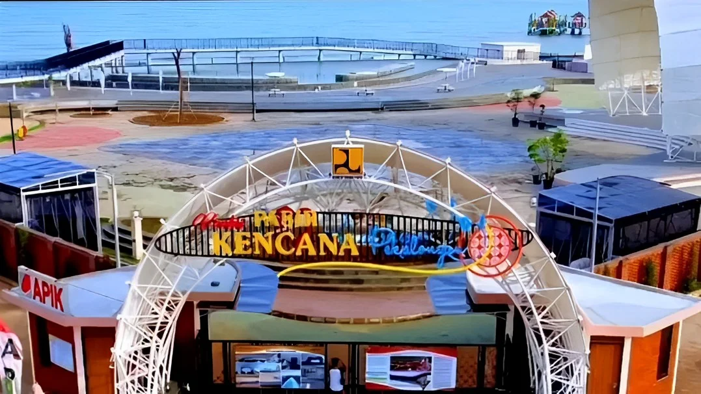

Wisata
- Kota Batik Pekalongan
- Pasar Batik Pekalongan
- Pantai Pasir Panjang 
- museum batik pekalongan
- pantai slamaran

Pekalongan dikenal dengan batik yang kaya akan seni dan budaya. Kota ini merupakan pusat pelestarian tradisi dan kerajinan lokal.selain batik,pekalongan juga memiliki daya tarik wisata yang populer antara lain museum batik pekalongan,monumen tugu,serta pantai pantai seperti pasir kencana dan pantai slamaran
Batik Pekalongan memiliki motif yang unik dan beragam, mencerminkan kekayaan budaya Indonesia.
Setiap tahun, Pekalongan mengadakan festival budaya yang menampilkan berbagai pertunjukan dan seni lokal seperti festifal balon dan tradisi syawalan lopis raksasa.